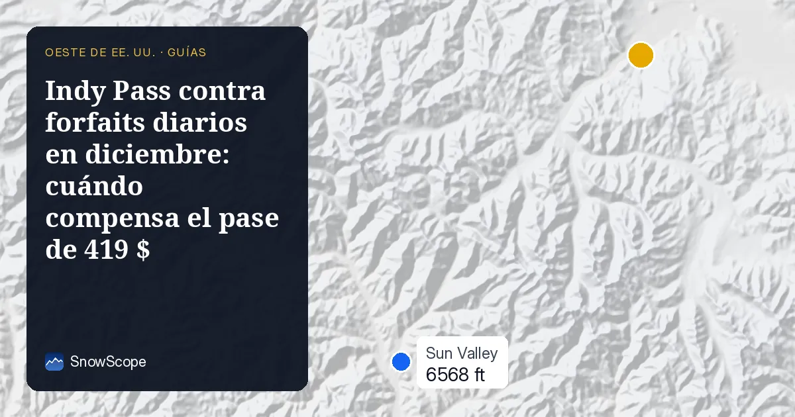

Indy Pass contra forfaits diarios en diciembre: cuándo compensa el pase de 419 $
El Indy Pass vende una idea simple: dos días en cada una de más de 300 estaciones de esquí independientes. Para un viaje de diciembre, la pregunta es si dos o tres estaciones pequeñas con probabilidades reales de nieve superan a los forfaits diarios. Hicimos las cuentas para siete estaciones Indy de nuestra lista de diciembre.
Consulta la previsión de nieve en tiempo real de US West en la app SnowScopeEspesor de nieve, alertas de nieve polvo y mapa 3D, gratis.
Lo que cuesta el pase
Para 2026-27, el Indy Base Pass cuesta 419 $ para adultos y da dos días completos (o nocturnos) en cada estación asociada, con fechas de exclusión. El Indy+ Pass cuesta 469 $, con los mismos dos días por estación pero sin fechas de exclusión. Si el viaje de diciembre cae en las fiestas, la cuestión de las exclusiones importa más que la diferencia de precio entre los dos pases.

Dos días, pagados en taquilla en su lugar
Esto es lo que cuestan dos días a los precios diarios verificados, cálculo propio. Loveland: 120 $ con los billetes online de inicio de temporada, pero 318 $ en taquilla a partir del 14 de diciembre. Brundage: 130 $ a su precio de salida. White Pass: 138 $ a su precio online más bajo fuera de días punta. Sunlight: 148 $ a su precio de salida. Beaver Mountain: 150 $. Montana Snowbowl: 156 $ entre semana, 170 $ en fin de semana. Snow King: 200 $ a su precio de salida.
El pase no compensa, por tanto, en una sola estación. Con los precios más bajos empieza a compensar desde la tercera estación visitada durante dos días; con precios de fin de semana, punta o taquilla, dos estaciones pueden bastar.
Qué estaciones Indy merecen la pena en diciembre
La nieve importa tanto como el precio. Según nuestro histórico, la proporción de inviernos con al menos 20 in (50 cm) en la media montaña el 15 de diciembre es del 87 % en White Pass, Snow King y Brundage, 83 % en Montana Snowbowl, 72 % en Sunlight, 67 % en Loveland y 57 % en Beaver Mountain.
Una ruta Indy de diciembre por el Noroeste y las Rocosas del norte, White Pass, Brundage, Snowbowl y Snow King, se sitúa en el lado más seguro. Beaver Mountain y Loveland conviene reservarlas para finales de diciembre, cuando sus probabilidades mejoran.
Cuándo ganan los forfaits diarios
Si esquías uno o dos días en una sola estación, los forfaits diarios ganan con facilidad: un lunes en Montana Snowbowl cuesta 78 $, un día entre semana en Beaver Mountain 75 $. Y en Loveland, el billete online de inicio de temporada a 60 $ hasta el 13 de diciembre es mejor negocio que cualquier día de pase que se le pudiera asignar.
El Indy Pass gana para el esquiador que se mueve: varias estaciones, dos días cada una, a lo largo del invierno. Diciembre es un buen mes para empezar a usarlo, no la única razón para comprarlo.
Consejos para esquiadores
- Cuenta primero tus salidas: una sola estación, compra forfaits diarios; tres estaciones o más, mira el pase.
- ¿Fechas de fiestas? Revisa la lista de exclusión del Indy o paga el extra por el Indy+.
- Combina en un mismo viaje las estaciones Indy más seguras en diciembre (White Pass, Brundage, Snowbowl, Snow King).
- Guarda los días online de 60 $ de Loveland para principios de diciembre y usa el pase en otro sitio.
Referencias y créditos
- White Pass, online day tickets 2026/27 (official) skiwhitepass.com/online-day-ticket-sales
- Beaver Mountain, tickets and passes 2026-2027 (official) www.skithebeav.com/tickets-and-passes/
- Snow King Mountain, winter day tickets (official store) store.snowkingmountain.com/en/catalogue/category/500-winter-lift-tickets/510-day-ticket_447/
- Loveland Ski Area, lift tickets 2026-27 (official) skiloveland.com/lift-tickets/
- Brundage Mountain, daily lift tickets (official) brundage.com/daily-lift-tickets/
- Montana Snowbowl, lift tickets 2026/27 (official) montanasnowbowl.com/sbblog/lift-tickets/
- Sunlight Mountain Resort, lift tickets (official) sunlightmtn.com/lift-tickets/
- Indy Pass, shop 2026-27 (official) www.indyskipass.com/shop
Sobre estas cifras
Cifras de nieve: histórico de nieve de SnowScope, 46 inviernos pasados (1980-81 a 2025-26) en las alturas indicadas (base, media, cima), una reconstrucción de la nieve pasada para una zona corregida por altitud (basada en ERA5-Land; Snow_Hydro 1 km para Marruecos), no los partes de la estación. Nieve actual: el mapa de SnowScope. Remontes, pistas y alturas: cartografía OpenSkiMap. Precios: las páginas oficiales listadas abajo, consultadas el 13 de noviembre de 2026; los precios dinámicos cambian con la fecha y la demanda.
Citar este informe
Para investigación, docencia o prensa: cifras y gráficos reutilizables libremente bajo CC BY 4.0 con esta cita.
SnowScope (2026), Indy Pass contra forfaits diarios en diciembre: cuándo compensa el pase de 419 $, https://snowscope.app/blog/es/2026/11/indy-pass-vs-day-tickets-december-2026.html, consultado el 2026-11-14
SnowScope (Atlas Labs). (2026, November 14). Indy Pass contra forfaits diarios en diciembre: cuándo compensa el pase de 419 $. SnowScope snow reports. https://snowscope.app/blog/es/2026/11/indy-pass-vs-day-tickets-december-2026.html
BibTeX
@misc{snowscope2026indypassvsdayticketsdece,
author = {{SnowScope (Atlas Labs)}},
title = {Indy Pass contra forfaits diarios en diciembre: cuándo compensa el pase de 419 $},
year = {2026},
month = nov,
howpublished = {\url{https://snowscope.app/blog/es/2026/11/indy-pass-vs-day-tickets-december-2026.html}},
note = {Published 2026-11-15 09:34 UTC; accessed 2026-11-14}
}· CC BY 4.0 · Métodos, datos y herramientas →
Sigue US West
Gratis: un aviso cuando llega la nieve y la previsión cada mañana.